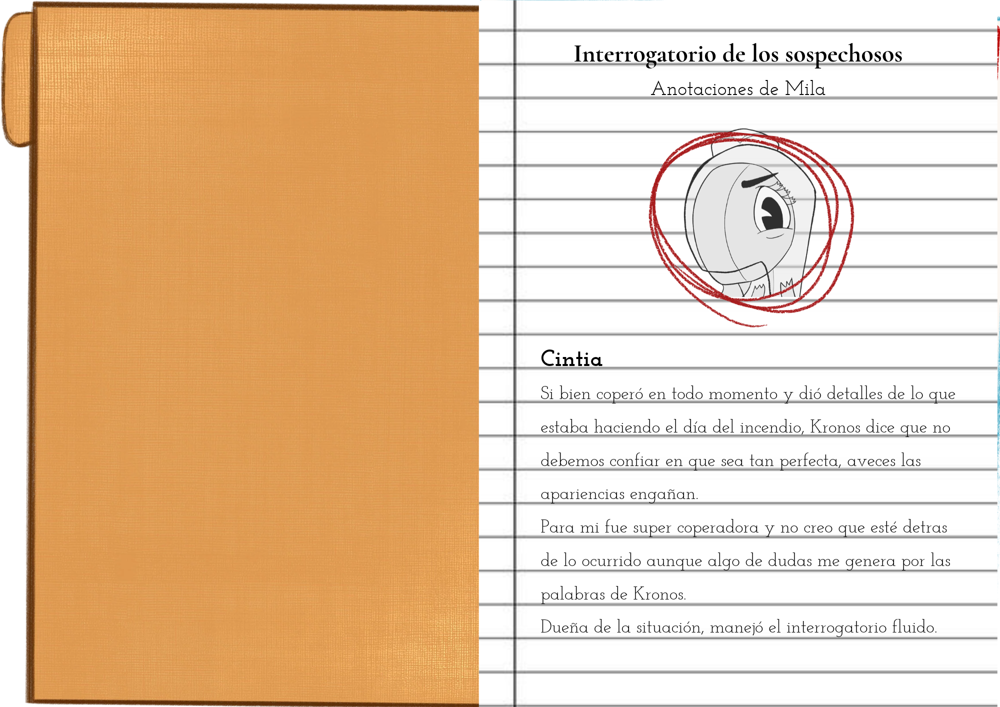
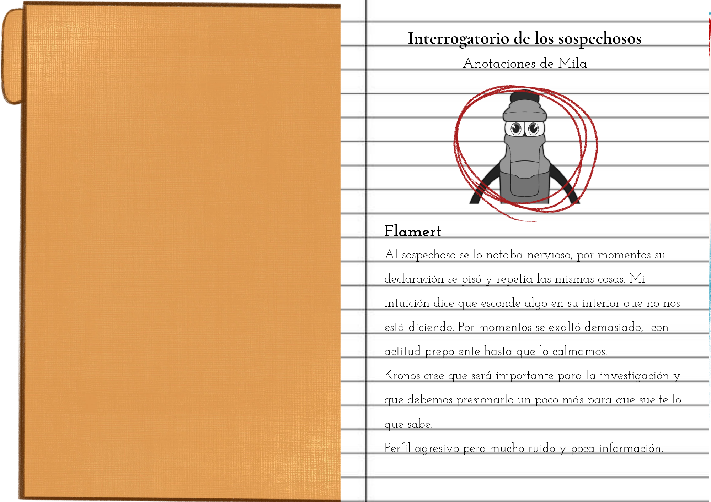
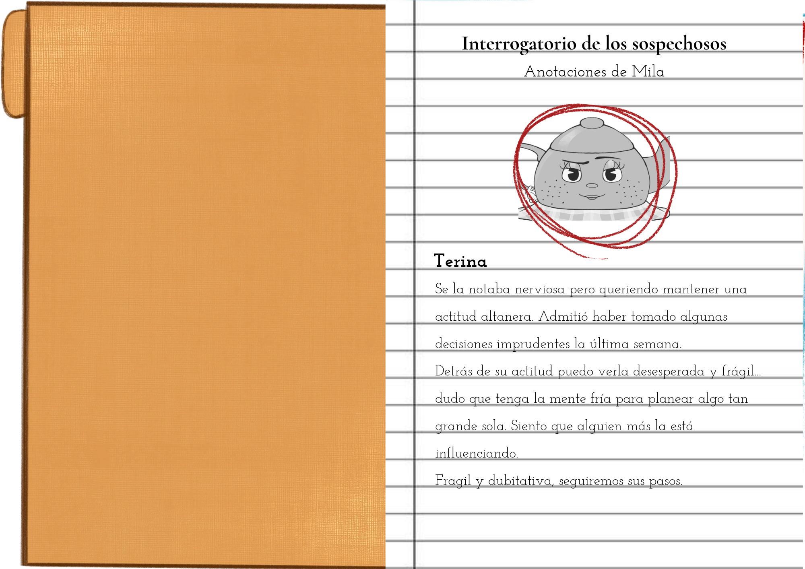
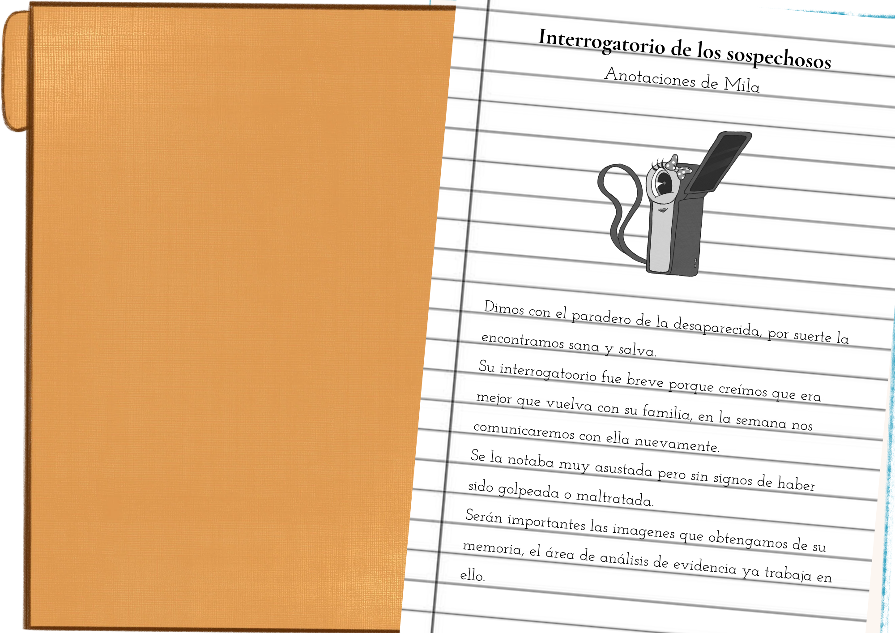

Más allá del tablero
El universo de Cinta Perdida se expande a través de sus personajes, sus registros y otros materiales que permiten reconstruir lo ocurrido.
ARCHIVO DE INVESTIGACIÓN
Interrogatorio de los sospechosos
En estas páginas se reúnen las anotaciones de Mila durante los interrogatorios. Cada registro conserva sus observaciones y las pistas que considera relevantes para la investigación.




Nota del expediente: Seleccioná una página para abrirla en tamaño completo.